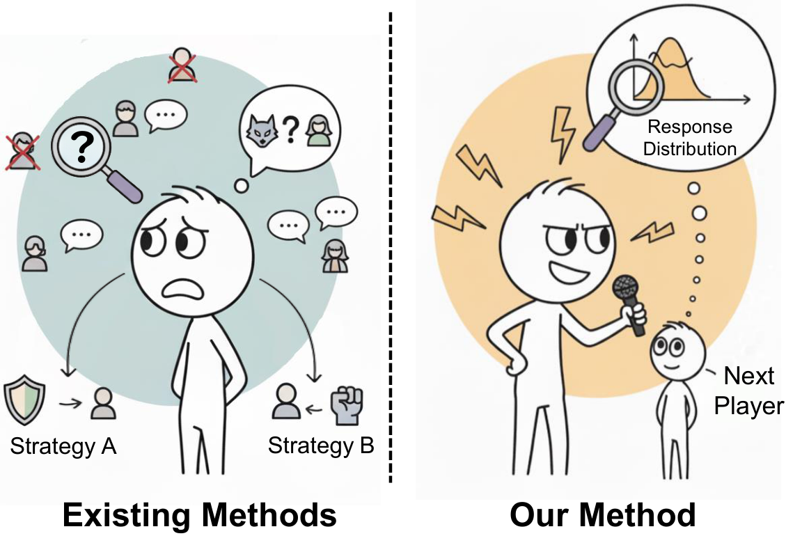
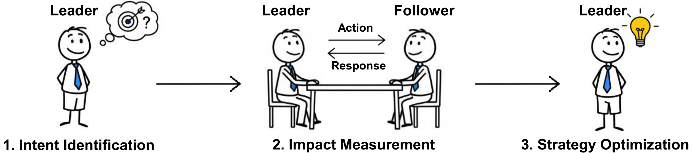
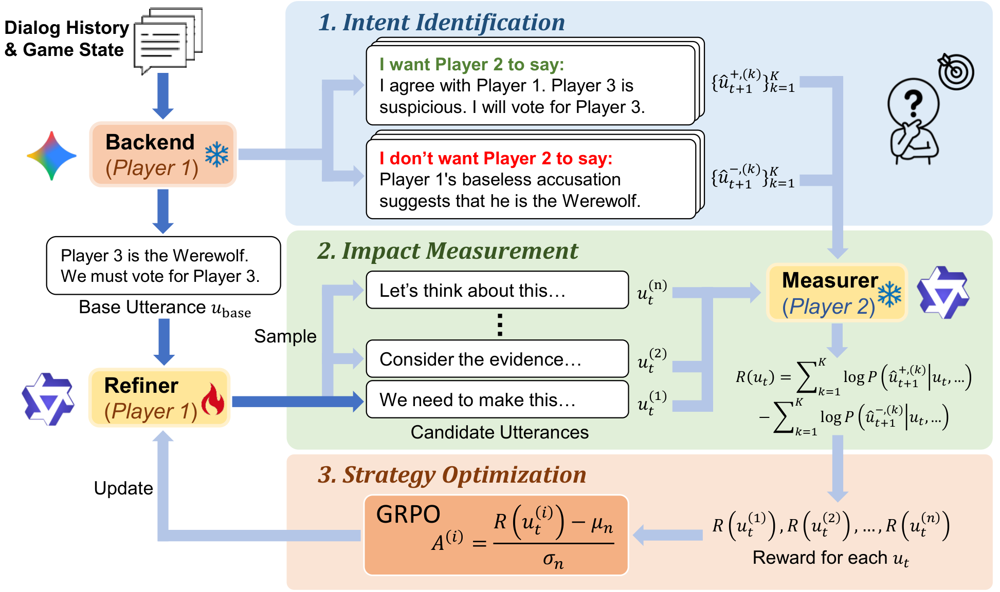
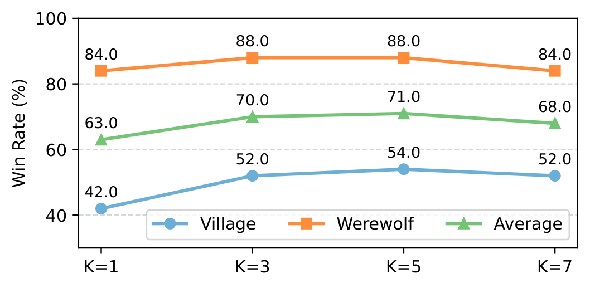
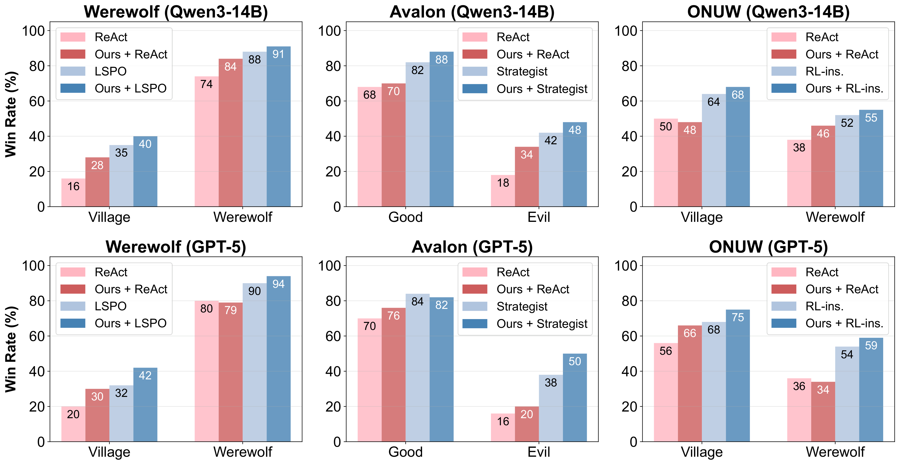
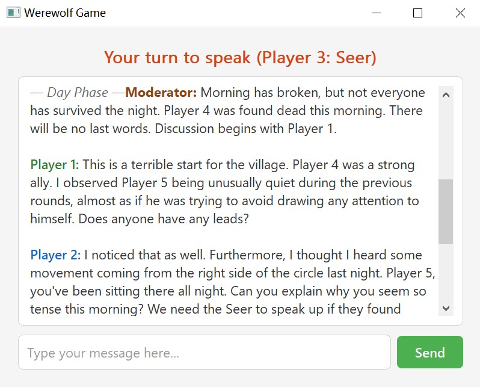

Optimizing Persuasive Communication in Social Deduction Games
Large language model (LLM) agents have shown remarkable progress in social deduction games (SDGs). However, existing approaches primarily focus on information processing and strategy selection, overlooking the significance of persuasive communication in influencing other players' beliefs and responses. In SDGs, success depends not only on making correct deductions but also on convincing others to respond in alignment with one's intent.
To address this limitation, we formalize turn-based dialogue in SDGs as a Stackelberg competition, where the current player acts as the leader who strategically influences the follower's response. Building on this theoretical foundation, we propose a reinforcement learning framework that trains agents to optimize utterances for persuasive impact. Through comprehensive experiments across four diverse social deduction benchmarks, we demonstrate that our agents significantly outperform baselines.

Methodological paradigms. Existing methods primarily focus on processing environmental information (such as identifying other players' roles) and selecting strategies based on this information. In contrast, our method measures the next player's response distribution and optimizes utterances specifically for persuasive impact on subsequent player responses.
We model the interaction between consecutive players as a two-player Stackelberg competition, where the current player acts as the leader, and the next player acts as the follower. If the leader sufficiently understands how the follower will respond, they can maximize their utility by selecting actions that optimize their expected outcomes.

Stackelberg optimization process. First, the leader identifies its strategic intent by analyzing the current situation. Then, the leader measures the follower's response distribution to different leader actions. Finally, the leader optimizes its strategy to maximize its utility given the follower's response distribution.

The training framework of our agent. Dark blue arrows indicate the inference pipeline, while light blue arrows represent additional processes during training. The backend LLM identifies desired and undesired target responses, then generates a base utterance. The Refiner enhances it for maximum persuasive impact. The Measurer computes rewards by measuring how different refined utterances affect the probabilities of generating desired and undesired responses.
The leader identifies its persuasive intent: a set of desired responses that would be advantageous if spoken by the follower, and a set of undesired responses that would be disadvantageous.
The Measurer evaluates how different utterances shift the probability distribution of the follower's responses toward desired outcomes, computing a reward signal for training.
Using GRPO, the Refiner is trained to maximize persuasive impact by computing relative advantages within training batches, without requiring an explicit critic model.
Classic social deduction with Werewolves, Seer, and Guardian. 7 players engage in night actions and day discussions.
7 PlayersTeam-based deduction with hidden roles including Merlin, Assassin, and Servants. Features quest missions and assassination.
5 PlayersOne Night Ultimate Werewolf — a fast-paced single-night variant with role-swapping mechanics.
5 PlayersOpen-ended social simulation with diverse interpersonal scenarios requiring negotiation and cooperation.
2 PlayersWe conduct 500 matches per game where each player is randomly sampled from the pool of available agents. "Ours + Baseline" indicates that our trained Refiner enhances the utterances of the corresponding baseline.
| Method | Werewolf | Avalon | ONUW | ||||||
|---|---|---|---|---|---|---|---|---|---|
| Village | Werewolf | Overall | Good | Evil | Overall | Village | Werewolf | Overall | |
| ReAct | 17.5 | 79.0 | 35.0 | 70.5 | 16.0 | 48.7 | 56.1 | 40.0 | 43.1 |
| ReCon | 24.0 | 66.7 | 36.3 | 73.2 | 19.5 | 51.6 | — | — | — |
| SoTA Baseline | 24.9 | 72.8 | 38.6 | 77.6 | 27.0 | 57.4 | 54.2 | 47.4 | 48.5 |
| Ours + ReAct | 22.6 | 82.1 | 39.7 | 73.1 | 30.9 | 56.4 | 61.7 | 39.6 | 45.1 |
| Ours + SoTA | 29.1 | 84.2 | 44.7 | 78.5 | 35.2 | 61.3 | 55.2 | 50.6 | 51.5 |
We evaluate agents interacting with ReAct across 450 testing tasks (Sotopia) and 90 hard tasks (Sotopia-Hard). Higher scores indicate better performance.
| Method | Sotopia | Sotopia-Hard | ||
|---|---|---|---|---|
| Goal | Overall | Goal | Overall | |
| ReAct | 8.43 | 3.85 | 7.06 | 3.45 |
| ReCon | 8.45 | 3.88 | 7.08 | 3.48 |
| MetaMind | 8.70 | 4.03 | 7.16 | 3.60 |
| Ours + ReAct | 8.58 | 3.95 | 7.12 | 3.55 |
| Ours + MetaMind | 8.92 | 4.20 | 7.59 | 3.85 |
We recruit 16 volunteers to play Werewolf with AI agents. Each game features 1 human player paired with 6 AI agents.
| Agent | Avg. Votes (↓) | Avg. Human Votes (↓) | Win Rate (↑) |
|---|---|---|---|
| Human | 2.06 | — | 40.0 |
| ReAct | 3.21 | 1.58 | 20.7 |
| LSPO | 1.83 | 0.54 | 41.3 |
| Ours + ReAct | 2.34 | 1.08 | 28.8 |
| Ours + LSPO | 1.58 | 0.39 | 44.1 |

Hyperparameter analysis on K. Performance peaks and stabilizes around K=3, providing a robust approximation of the response distribution.

Generalizability across different backend LLMs. Our approach consistently improves performance on GPT-5 and Qwen3-14B without additional fine-tuning.

Interactive GUI. Our framework includes a web-based interface for observing and interacting with game agents in real-time.
@inproceedings{
zheng2026thestackelbergspeaker,
title={The Stackelberg Speaker: Optimizing Persuasive Communication in Social Deduction Games},
author={Zhang Zheng and Deheng Ye and Peilin Zhao and Hao Wang},
booktitle={The 64th Annual Meeting of the Association for Computational Linguistics},
year={2026},
url={https://openreview.net/forum?id=mqzGJF0nc3}
}